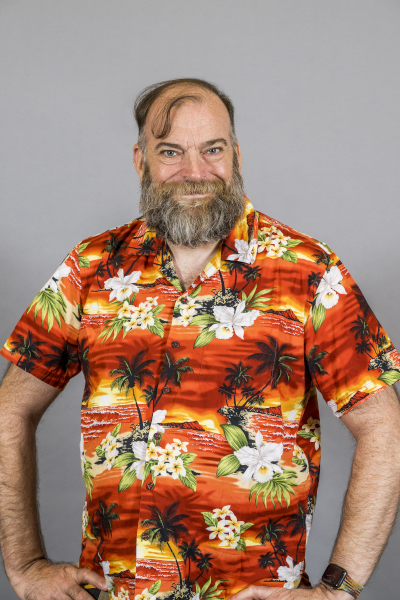
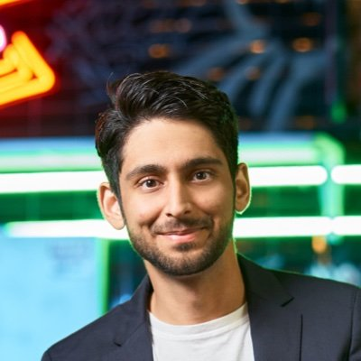
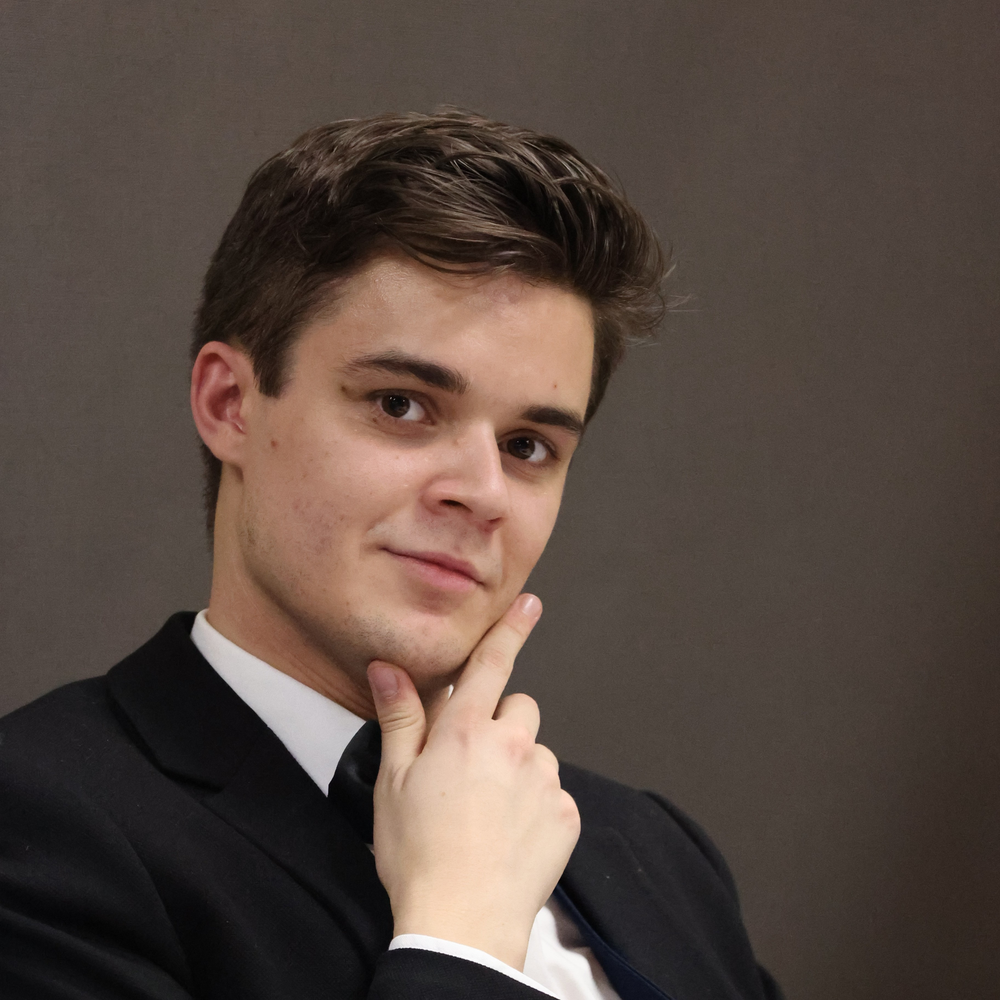
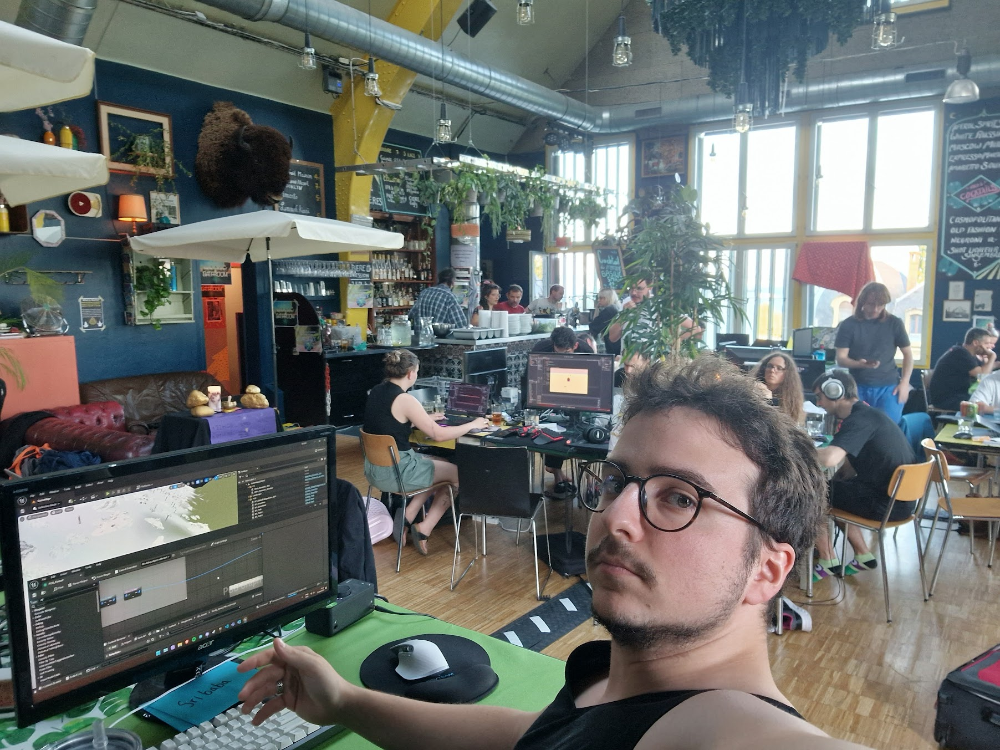
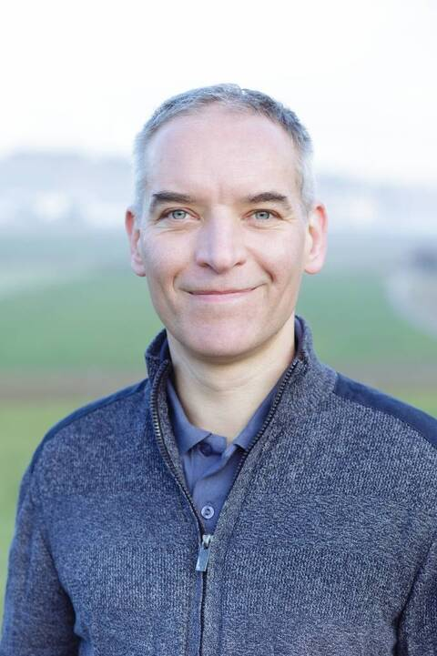
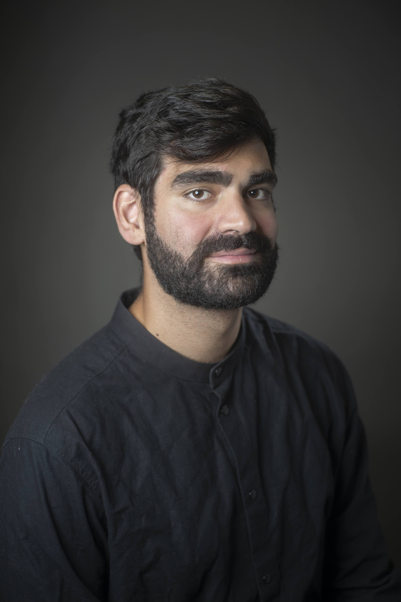

RGB Games Programming Conference: Green for Industry Edition
The RGB 2nd Games Programming Conference: Green for Indie Edition is a game tech conference for industry and independent game developers.
Our goal for the second edition is to gather game developers from Switzerland and Auvergne-Rhône-Alpes region for a day of talks and networking.
Location: Octagon
Date: February 10th 2024
Schedule
- 9:30: Opening keynote: N. Siorak, Geneva Resilience Center, and E. Farhan, Team KwaKwa: What if things could get worse?
- 10:20: A. Serex, Quantic Dream, Invisible work - What it takes to make a AAA game
- 11:10: J. Guy Davison, ex-Creative Assembly, What we mean when we talk about “Platform”
- 13:20: N. Schneider, Old Skull Games, How to share tools on several projects using the most of Unity Editor
- 14:10: A. Naderi, CDPR, Why being just a designer is not enough
- 15:30: L. Floreau, Eden Games, First-person Controller : Journey of a Gameplay Programmer in AA Company
- 16:20: Closing speech: E. Farhan, Team KwaKwa
Buy your tickets: here
Feature Speaker: J. Guy Davidson, ex-Head of Engineering Practice at Creative Assembly, UK Chair of programming languages for the BSI and a voting member of the ISO C++ standard committee will be giving a talk about what we mean when we say "Platform".

Other speakers
- Arash Naderi, CDPR

- Luca Floreau, Eden Games
¨

- Nicolas Schneider, Old Skull Games

- Alexandre Serex, Quantic Dream

- Nicolas Siorak, Geneva Resilience Center

- Elias Farhan, Team KwaKwa

More news to follow!